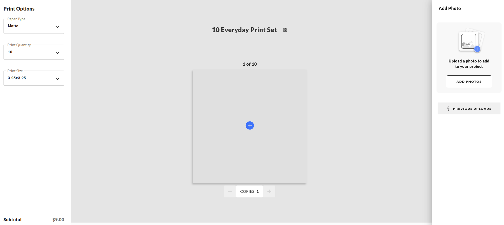
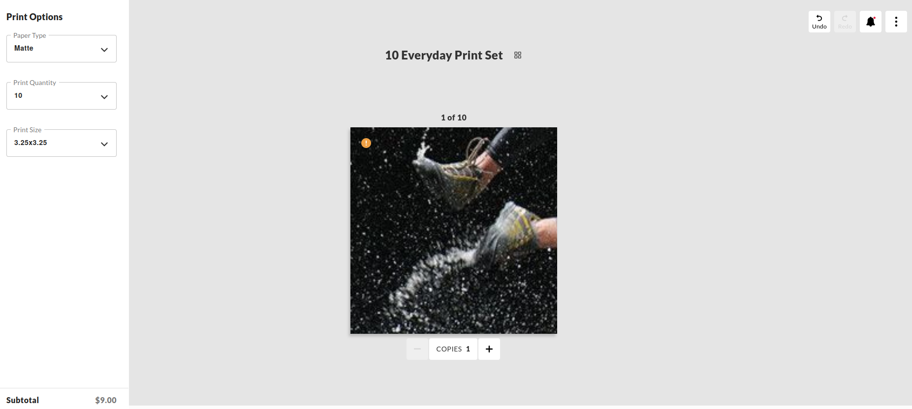
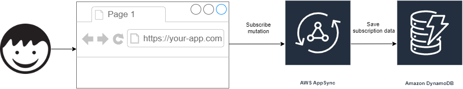
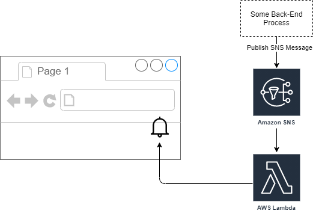
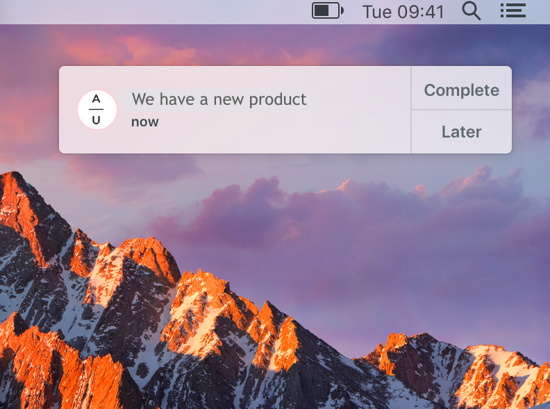
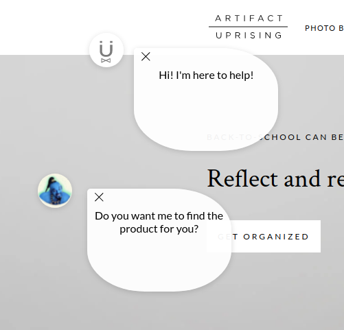
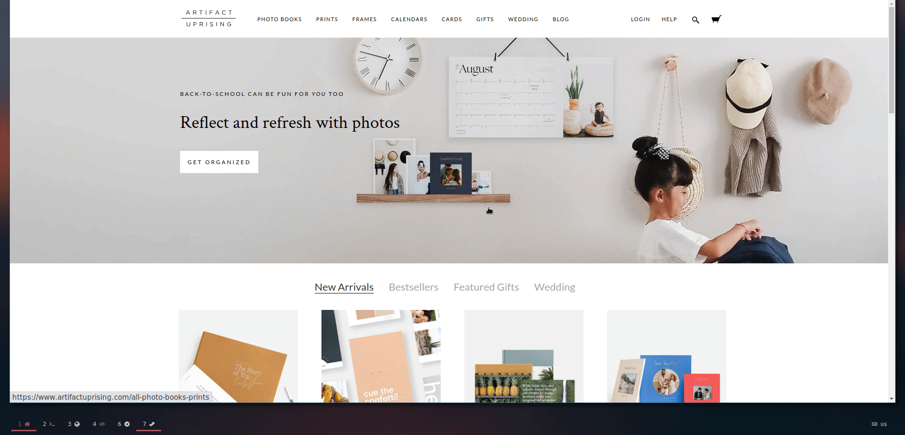

<!DOCTYPE html>
<html lang="en">
  <head>
    <meta charset="utf-8" />
    <meta name="viewport" content="width=device-width, initial-scale=1.0, maximum-scale=1.0, user-scalable=no" />

    <title>AU Hackathon</title>
    <link rel="stylesheet" href="./dist/reveal.css" />
    <link rel="stylesheet" href="./dist/theme/solarized.css" id="theme" />
    <link rel="stylesheet" href="./css/highlight/atom-one-dark.css" />
    <link rel="stylesheet" href="./_assets/src/css/grid.css" />
    <link rel="stylesheet" href="./_assets/src/css/styles.css" />

  </head>
  <body>
    <div class="reveal">
      <div class="slides"><section  data-markdown><script type="text/template">

<!-- .slide: class="" -->

## Smart Crop and Design Features

<hr class="center-diamond" />

Artifact Uprising

<!--  -->

</script></section><section ><section data-markdown><script type="text/template">
## What is this Hack about?
</script></section><section data-markdown><script type="text/template">

</script></section><section data-markdown><script type="text/template">

</script></section><section data-markdown><script type="text/template">

</script></section><section data-markdown><script type="text/template">

</script></section><section data-markdown><script type="text/template">

</script></section><section data-markdown><script type="text/template">

</script></section><section data-markdown><script type="text/template">

</script></section><section data-markdown><script type="text/template">

</script></section><section data-markdown><script type="text/template">

</script></section><section data-markdown><script type="text/template">
<!-- .slide: data-background="./static/meme.jpg" -->

### We need this!!
<!-- .element: style="color: white; text-shadow: -1px 0 black, 0 1px black, 1px 0 black, 0 -1px black;" -->

## But Why?
<!-- .element: style="color: white; text-shadow: -1px 0 black, 0 1px black, 1px 0 black, 0 -1px black;" -->

</script></section></section><section  data-markdown><script type="text/template">
# Demo Time

</script></section><section  data-markdown><script type="text/template">
What's next?

### Ship it!


</script></section><section  data-markdown><script type="text/template">
<!-- .slide: style="text-align: left;" -->

### Future Work
## More features

- Make smart crop the default behaviour
- Add Object Detection feature
- Integrate Face Detection to Editor v2
- . . .

</script></section><section  data-markdown><script type="text/template">
# Thank you!
</script></section><section  data-markdown><script type="text/template"></script></section><section  data-markdown><script type="text/template">
<!-- .slide: class="" -->

## nAUtifications

<hr class="center-diamond" />

Artifact Uprising

<!--  -->

</script></section><section ><section data-markdown><script type="text/template">

## What is this Hack about?
</script></section><section data-markdown><script type="text/template">
### What is this Hack about?

<!-- .slide: style="text-align: left;" -->

- Real-time announcements
- Status notifications
- Notifications with interactions
    - Forms to collect information

- and more!
</script></section><section data-markdown><script type="text/template">
## What we did?
</script></section><section data-markdown><script type="text/template">
<!-- .slide: style="text-align: right;" -->



</script></section><section data-markdown><script type="text/template">
## What did we achieve?
</script></section><section data-markdown><script type="text/template">
### Desktop Notifications


</script></section><section data-markdown><script type="text/template">
### Real Time interactions


</script></section><section data-markdown><script type="text/template">

</script></section><section data-markdown><script type="text/template">
### Draggable Notifications


</script></section></section><section ><section data-markdown><script type="text/template">
## Demo Time
</script></section><section data-markdown><script type="text/template">


</script></section></section><section ><section data-markdown><script type="text/template">
What's next?

## Ship it? Not now
</script></section><section data-markdown><script type="text/template">
<!-- .slide: style="text-align: left;" -->

### Steps

- From Staging to Production
- Define the interaction we want to have with the user
- Create an interface to send notifications
    - Slack command
    - Custom form on magento admin
- Test it a lot!

</script></section></section><section  data-markdown><script type="text/template">
# Thank you!
</script></section></div>
    </div>

    <script src="./dist/reveal.js"></script>

    <script src="./plugin/markdown/markdown.js"></script>
    <script src="./plugin/highlight/highlight.js"></script>
    <script src="./plugin/zoom/zoom.js"></script>
    <script src="./plugin/notes/notes.js"></script>
    <script src="./plugin/math/math.js"></script>
    <script>
      function extend() {
        var target = {};
        for (var i = 0; i < arguments.length; i++) {
          var source = arguments[i];
          for (var key in source) {
            if (source.hasOwnProperty(key)) {
              target[key] = source[key];
            }
          }
        }
        return target;
      }

      // default options to init reveal.js
      var defaultOptions = {
        controls: true,
        progress: true,
        history: true,
        center: true,
        transition: 'default', // none/fade/slide/convex/concave/zoom
        plugins: [
          RevealMarkdown,
          RevealHighlight,
          RevealZoom,
          RevealNotes,
          RevealMath
        ]
      };

      // options from URL query string
      var queryOptions = Reveal().getQueryHash() || {};

      var options = extend(defaultOptions, {}, queryOptions);
    </script>


    <script>
      Reveal.initialize(options);
    </script>
  </body>
</html>
